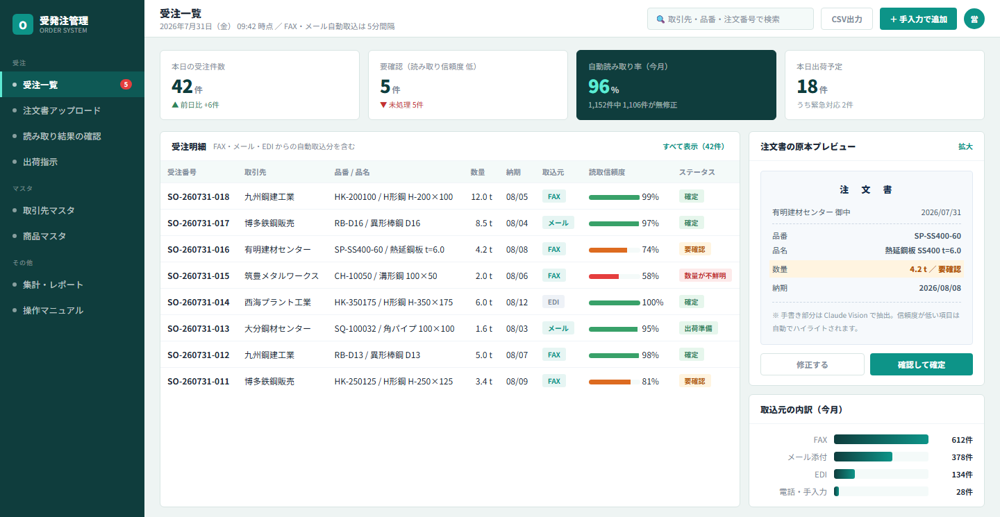
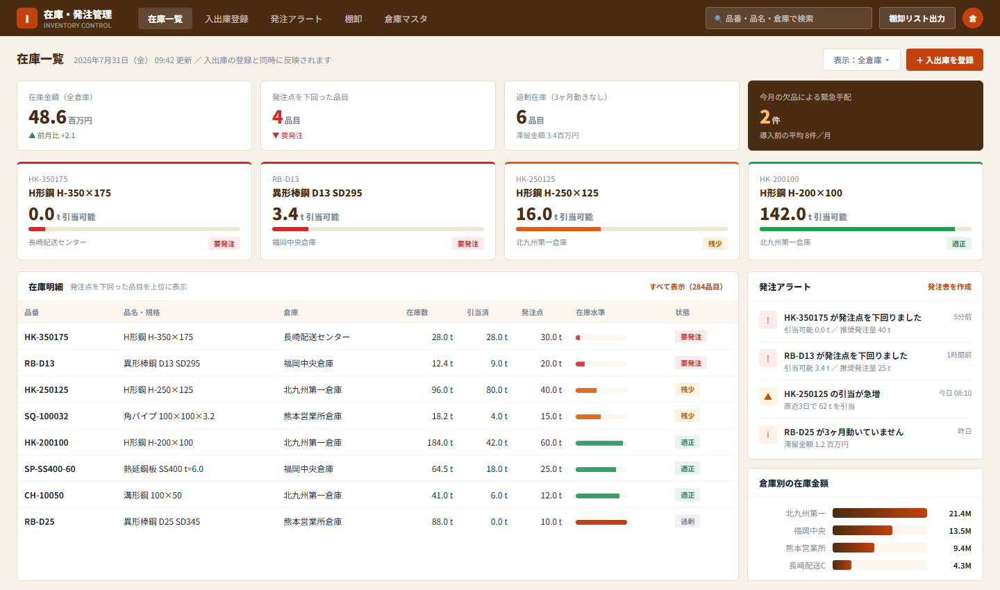
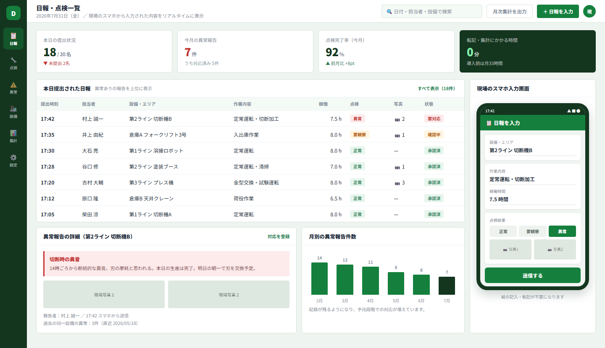
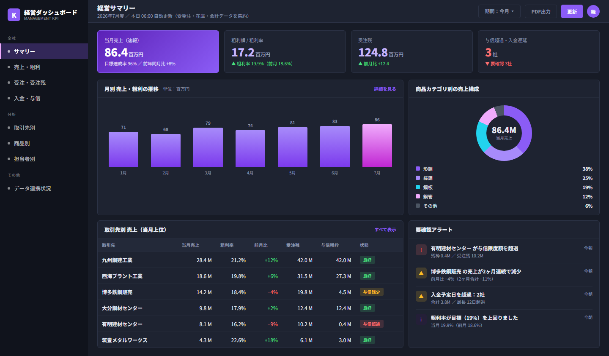

「DX が必要とは思っているが、高額なシステム投資には踏み切れない」
「大手ベンダーに相談したら、費用・期間・専門用語が重くなりすぎた」
そんな中小企業のために、1業務だけ・65万円・1〜2ヶ月で始められる DX を作りました。
OUR TEAM
個人サービスではなく、3つの専門家がチームを組みます
受注から納品・運用定着まで、営業・戦略・技術のプロが一貫して対応します。
大手 SIer では費用が合わない小規模案件にも、万全の体制でお応えします。

SALES & NETWORK
小林 健（こば）
顧客開拓・営業
動画制作・SNS運用代行で急成長中のIDEAL代表。幅広い業種の経営者ネットワークを活かし、ヒアリングから提案・受注まで一貫して担当。信頼を軸にした入口づくりが強みです。

DX ADVISOR × AI/DX
太田 肇（はじめ）
DXアドバイザー
IT戦略の上流設計から現場課題の整理まで対応。DX導入の勘所を押さえた提案で「何から手をつければいいか」を明確にし、経営者の意思決定をスムーズに導きます。

CLAUDE CODE × AWS 開発
福田 和弘（kazu）
技術開発・実装
Claude Code × AWS で中小企業向けシステムを高速開発。Lambda・S3・DynamoDB を使ったサーバーレス構成で、月数千円の運用コストを実現。完全カスタム仕様で 1〜2ヶ月納品を担当します。
営業・顧客開拓・DXアドバイザー・技術開発の3つの専門家がチームを組み、
受注から納品・運用定着まで一貫して対応します。
⚡ 技術スタックは Claude Code × AWS（Lambda / S3 / DynamoDB）。
高速開発 × サーバーレスで、月数千円の運用コストと 1〜2ヶ月納品を実現します。
PROBLEM
こんなお困りごとはありませんか？
地方の中小企業に多く残る、FAX・紙・Excel 業務の現場課題です。
📠
FAX注文書を毎日 Excel に手入力
転記ミス・入力漏れが発生し、確認作業に時間がかかっています。
📊
Excel ファイルが増えすぎて管理不能
最新版が分からず、担当者しか使えない属人化 Excel が業務を止めます。
👤
担当者が休むと現場が止まる
引き継ぎできない業務が多く、属人化リスクが経営課題になっています。
💸
DX に踏み切れない
必要性は感じているが、大手 SIer の高額提案では費用対効果が見えません。
✍️
手書きの領収書・請求書が山積みになっている
手書き帳票は既存のOCRでは読み取り精度が低く、結局すべて手入力。Claude Vision を使えば手書き文字も高精度に自動抽出できるため、手書き書類の入力ゼロが実現できます。
🟡
freee を使っているが、自社ルールに対応できない
freee は汎用的で便利な反面、自社独自の承認フロー・勘定科目ルール・帳票フォーマット・社内システム連携には限界があります。パッケージの枠を超えた業務固有の要件は、完全カスタム開発でしか実現できません。
SERVICE PACKS
脱 Excel・脱 FAX の
第一歩を選んでください
2つのパックはいずれも「1業務だけ・65万円・完全カスタム」で成立します。
市販パッケージでは絶対に実現できない、あなたの会社専用システムを Claude Code × AWS で構築します。
まず 1 業務だけシステム化し、大手 SIer では採算が取れない小規模カスタマイズの土台を、65万円でつくる第一歩です。
※ この2つはご相談の多い代表例です。当てはまらない業務も柔軟に対応できます（下記参照）
PACK A
📠
FAX・紙・手書き帳票
AI-OCR パック
製造業・卸売業・経理部門 向け
FAX・PDF・紙の注文書をアップロードするだけで、Amazon Textract + Claude Vision が主要項目を自動読み取り。
現場の FAX 運用はそのままに、入力作業だけをなくします。
手書きの領収書・請求書も高精度に対応。読み取り項目・出力形式は貴社の帳票専用にカスタムします。
- ファイルアップロード画面（FAX・PDF・画像対応）
- AI-OCR 自動読み取り（取引先・数量・納期など最大8項目）
- ✍️ 手書き帳票の高精度読み取り（Claude Vision）
- 読み取り結果の一覧・簡易修正画面
- Excel/CSV 出力機能
- 操作マニュアル 1枚
- 将来の拡張（基幹系連携・承認フロー）に対応できる設計
「印刷された帳票も手書きの領収書も、どちらも同じ画面からアップロードするだけ。FAX も手書きもやめなくていい。入力作業だけを 65万円でゼロにしましょう。」
最多ご相談
PACK B
📋
Excel業務
ミニシステム化パック
属人化 Excel を抱える企業 向け
「Excel 職人」しか使えない属人化ファイルを、入力フォーム・一覧・検索を持つ会社専用 Web システムに置き換えます。
業務フローはそのまま。一番困っている Excel だけが対象なので、会社全体を変える必要はありません。
- 既存 Excel の業務フロー整理・整合確認
- 入力フォーム 1種類（バリデーション付き）
- 一覧・検索・絞り込み画面
- Excel/CSV 出力機能
- 簡易ログイン機能（権限管理）
- 操作マニュアル 1枚
- 将来の機能追加に対応できる拡張可能な設計
「Excel を全部やめる必要はありません。まず一番困っている Excel だけを 65万円でシステム化する——それが脱 Excel の第一歩であり、カスタム拡張の土台になります。」
2つのパック以外もOK
「うちの業務は、どちらにも当てはまらない」
——その場合もご相談ください。
パックはあくまでご相談の多い代表例です。
完全カスタム開発なので、毎日くり返している手作業であれば、業務の種類を問わず対象になります。
📥 受発注の自動化
📦 在庫・発注の見える化
📋 日報・点検のデータ化
📊 経営ダッシュボード
👥 顧客・案件管理
🧮 見積・請求書の作成
🕒 シフト・勤怠の集計
💬 問い合わせ対応の効率化
📑 社内申請・承認フロー
🔗 既存システムとの連携
EXPANSION
第一歩の次に広がる可能性
65万円パックで構築したシステムは、将来の機能追加を前提とした設計になっています。
業務に慣れてきたら、必要な機能だけを追加して段階的に育てていけます。
🔗
freee API 連携
承認済みデータを freee に自動連携し、仕訳・請求書登録を自動化。freee 単体では対応できない自社独自の勘定科目ルールや承認フローも、カスタム連携で完全対応します。
✅
多段階承認フロー
金額・取引先・部門ごとに承認ルートを分岐。「10万円以上は部長承認 → 社長決裁」など、社内規程に合わせた柔軟なワークフローを実装します。
💬
LINE / Slack 通知
承認依頼・期限アラート・差し戻し通知をチャットに自動送信。メールを見逃しがちな現場担当者にもリアルタイムで届きます。
📱
モバイル対応
外出先・工場フロアからスマートフォンで承認・入力が可能に。PCを持たない現場スタッフもシステムを使えるようになります。
🔄
基幹系・販売管理システム連携
受注・在庫・販売管理などの既存システムへ自動データ取り込み。二重入力を排除し、複数システム間のデータ整合性を保ちます。
📈
月次レポート自動生成
処理件数・金額集計・エラー率などをまとめたレポートを PDF または Excel で自動作成し、指定のメールアドレスへ定期配信します。
※ 拡張機能は別途お見積もりになります。まずは65万円パックで土台を作り、必要な機能から順に追加していく形がおすすめです。
CASE STUDY
導入で何がどう変わったか
「時間が減りました」だけでは判断できません。何を・どう測って・どれだけ変わったかを、算出根拠まで公開します。
実測 導入前後を実際に計測した値
モデルケース 前提条件を明記した試算（実績ではありません）
5つの事例のまとめ
| 業務 | Before | | After | 削減 | 回収目安 | 種別 |
|---|
| 請求書処理 |
月33h | → | 月7h |
▲26h | 約13ヶ月 |
実測 |
| 受発注業務 |
月40h | → | 月10h |
▲30h | 約11ヶ月 |
試算 |
| 在庫・発注 |
月14h | → | 月4h |
▲10h | 約13ヶ月 |
試算 |
| 日報・点検 |
月33h | → | 月6h |
▲27h | 約12ヶ月 |
試算 |
| 経営ダッシュボード |
月20h | → | 月2h |
▲18h | 約18ヶ月 |
試算 |
気になる業務の行をクリックすると、その事例へ移動します。詳細は各カードの「詳しく見る」から開けます。
CASE 01
実測
経理・バックオフィス ／ PACK A
請求書 AI-OCR 管理システム
受領した請求書を目視で確認し、Excel に手入力していた業務を、確認作業だけに。
作業時間
▲26 h/月
33h → 7h（79% 減）
手書きの読み取り一致率
94 %
従来OCR 52% → 94%
投資回収の目安
約13 ヶ月
月52,000円相当の削減
この事例を詳しく見る閉じる
作業時間の変化
月400件 × 1件あたり約5分（目視確認 → Excel手入力）
月400件 × 1件あたり約1分（自動読取 → 確認・修正のみ）
年間に換算すると約 312 時間の削減
あわせて検証｜手書き帳票の読み取り精度（同一サンプル50枚で比較）
従来のOCR
52%
Claude Vision
94%
実施した打ち手
PDF・画像をドラッグ＆ドロップで一括投入
取引先・金額など主要8項目を自動抽出
承認フローと処理状況の可視化
会計ソフト取込用の CSV 出力

実際の読み取り結果確認画面。誤読はその場で修正できます。
このシステムの全画面を見る（5画面）
Claude Code × AWS（Amplify / Textract / Lambda / DynamoDB）で構築し、本番稼働している画面です。
お客様の帳票・業務フローに合わせて、同様の仕組みを完全カスタムで構築します。

🔍 クリックで拡大

🔍 クリックで拡大
🔍 クリックで拡大

🔍 クリックで拡大

🔍 クリックで拡大
投資回収の目安
約 13 ヶ月
012ヶ月24ヶ月
月26時間 × 時給2,000円 = 月52,000円相当 ／ 初期費用 650,000円で試算
算出根拠・前提条件をひらく
- 測定範囲
- 請求書の受領から会計ソフト取込までの一連の作業（保管・照会は含まない）
- 処理件数
- システムのダッシュボード実測値（400件／月）
- 作業時間
- 導入前後で同一担当者の作業をストップウォッチ計測（各20件の平均）
- 精度検証
- 実際に受領した手書き帳票50枚。人が入力した正解データとの完全一致で判定
- 前提
- 帳票様式は既存のまま。OCR誤読の修正時間を After に含む
CASE 02
モデルケース
製造業・卸売業（従業員30〜80名規模） ／ PACK A
受発注業務の自動化
FAX・メールで届く注文を、受け取り方を変えずにデータ化。転記とダブルチェックをなくします。
転記作業の時間
▲30 h/月
40h → 10h（75% 減）
受注入力の誤り
▲8 件/月
月10件 → 月2件
投資回収の目安
約11 ヶ月
月60,000円相当の削減
この事例を詳しく見る閉じる
作業時間の変化
1日30件 × 1件あたり約4分を2名で転記・ダブルチェック
スキャン → 自動読取 → 受注一覧で確認のみ（1件あたり約1分）
取引先に FAX をやめてもらう必要はありません
実施した打ち手
複合機でスキャンした注文書をそのまま投入
取引先・品番・数量・納期を自動抽出
受注一覧での確認・修正と重複検知
基幹システム取込用の CSV 出力

画面イメージ｜受注一覧。読み取り信頼度が低い明細は自動でハイライトされ、原本と並べて確認できます。
投資回収の目安
約 11 ヶ月
012ヶ月24ヶ月
月30時間 × 時給2,000円 = 月60,000円相当 ／ 初期費用 650,000円で試算
算出根拠・前提条件をひらく
- 業務量
- FAX・メール注文 1日30件 × 月20営業日 = 月600件
- 単価
- 事務職の人件費を時給2,000円として換算
- 誤り件数
- 受注内容の訂正・再出荷が発生した件数を想定（月10件 → 月2件）
- 除外
- 問い合わせ対応・イレギュラー品の確認作業は含まない
- 注意
- 実績ではなく試算です。件数・帳票様式により結果は変動します
CASE 03
モデルケース
卸売業・製造業 ／ PACK B
在庫・発注の見える化
Excel と現場の記憶に頼っていた在庫を一覧化。欠品と過剰在庫の両方を減らします。
在庫確認・棚卸の時間
▲10 h/月
14h → 4h（71% 減）
欠品による緊急手配
▲6 件/月
月8件 → 月2件
投資回収の目安
約13 ヶ月
月50,000円相当の削減
この事例を詳しく見る閉じる
在庫情報の鮮度
担当者がExcelを手集計。最新値が分からず、現場に電話で確認
入出庫の登録と同時に反映。誰でも同じ最新在庫を参照できる
発注点を下回ると自動でアラート表示
実施した打ち手
入出庫の登録画面（スマホからも入力可）
品番・倉庫・在庫数での検索・絞り込み
発注点を下回った品目の自動アラート
棚卸リスト・発注リストの出力

画面イメージ｜在庫一覧。発注点を下回った品目が上位に表示され、右側にアラートが並びます。
投資回収の目安
約 13 ヶ月
012ヶ月24ヶ月
作業時間 月10時間 × 時給2,000円 = 20,000円 ＋ 緊急手配の追加コスト 6件 × 5,000円 = 30,000円 ／ 合計 月50,000円相当で試算
算出根拠・前提条件をひらく
- 作業時間
- 在庫確認・棚卸・Excel集計にかかる時間（担当2名 × 週1.5時間）
- 緊急手配
- 欠品時の特急便・小口発注による追加コストを1件あたり5,000円と想定
- 単価
- 事務職の人件費を時給2,000円として換算
- 除外
- 過剰在庫の削減による資金繰り改善効果は金額換算に含めていません
- 注意
- 実績ではなく試算です。品目数・拠点数により結果は変動します
CASE 04
モデルケース
製造業・建設業・設備保守 ／ PACK B
日報・点検のデータ化
紙の日報・点検表をスマホ入力に。転記をなくし、過去の記録をすぐ探せる状態にします。
転記・集計の時間
▲27 h/月
33h → 6h（82% 減）
過去記録の検索
15分→10秒
キャビネットから画面検索へ
投資回収の目安
約12 ヶ月
月54,000円相当の削減
この事例を詳しく見る閉じる
作業時間の変化
作業者20名 × 1日5分の手書き ＋ 事務担当によるExcel転記
現場でスマホ入力 → 転記ゼロ。集計は自動
写真を添付できるので、口頭説明の往復も減ります
実施した打ち手
現場のスマホから入力できる日報フォーム
点検箇所の写真添付（異常の記録に）
日付・設備・担当者での絞り込み検索
異常件数・稼働状況の自動集計

画面イメージ｜日報一覧。異常ありの報告が上位に表示され、現場写真もその場で確認できます。
投資回収の目安
約 12 ヶ月
012ヶ月24ヶ月
月27時間 × 時給2,000円 = 月54,000円相当 ／ 初期費用 650,000円で試算
算出根拠・前提条件をひらく
- 業務量
- 作業者20名 × 1日5分の記入 × 月20営業日 ＋ 事務担当の転記・集計 月20時間
- 検索時間
- 紙の綴りから該当日の記録を探す時間（実測ではなく想定値）
- 単価
- 事務職の人件費を時給2,000円として換算
- 除外
- 記録の保管スペース削減・監査対応の効率化は金額換算に含めていません
- 注意
- 実績ではなく試算です。人数・記入項目数により結果は変動します
CASE 05
モデルケース
経営層・管理部門 ／ PACK B ＋ 拡張
経営ダッシュボード
売上・利益・KPI を一画面に。月次の集計を待たずに、その場で判断できる状態をつくります。
集計・資料作成の時間
▲18 h/月
20h → 2h（90% 減）
数字が見えるまで
翌月→翌日
月次締めを待たずに把握
投資回収の目安
約18 ヶ月
月36,000円相当の削減
この事例を詳しく見る閉じる
数字が見えるまでの時間
各部署からExcelを集め、担当者が手作業で集計・グラフ化
各システムのデータを自動集計。ダッシュボードは毎朝更新
「先月どうだった？」に、その場で答えられる状態へ
実施した打ち手
各システム・Excelからのデータ自動集約
売上・利益・KPI を一画面に可視化
取引先別・商品別の内訳ドリルダウン
スマホ・タブレットからの閲覧に対応

画面イメージ｜経営サマリー。売上・粗利・受注残・与信の状況と、要確認アラートを一画面に集約。
投資回収の目安
約 18 ヶ月
012ヶ月24ヶ月
月18時間 × 時給2,000円 = 月36,000円相当 ／ 初期費用 650,000円で試算（意思決定が早まる効果は含まず）
算出根拠・前提条件をひらく
- 業務量
- 月次の集計・資料作成にかかる時間（管理部門 月20時間）
- 単価
- 管理部門の人件費を時給2,000円として換算
- 前提
- 集計元となるデータが電子化されていることが前提です（未電子化の場合は PACK A・B との組み合わせが必要）
- 除外
- 判断が早まることによる機会損失の防止効果は金額換算に含めていません
- 注意
- 実績ではなく試算です。データソースの数により結果は変動します
※ 掲載している数値は、記載した前提条件のもとでの結果・試算です。業務量・帳票様式・運用体制により効果は変動します。
※ CASE 01 の画面は実際に稼働しているシステムのものです。CASE 02〜05 の画面は、構築イメージをお伝えするためのモックアップであり、実在システムの画面ではありません。
※ 導入企業様の名称は、許諾をいただいた場合を除き掲載しておりません。
※ 貴社の実際の帳票・Excel を用いた事前検証も承っています。まずは無料相談にてご相談ください。
イメージ写真：Unsplash（商用利用可・クレジット表記不要のライセンス）
PRICING
サービス開始特別価格でご提供
⏱ 導入期間 1〜2ヶ月
🎯 対象業務 1つに限定
📱 画面 1〜2画面
📄 出力 1種類
65万円は「値引き」ではなく、サービス開始時の実績づくり価格です。
通常 90万円の内容を、初期の限定特別価格としてご提供しています。
※ 外部システム連携・複数業務・追加画面等は別途お見積もり
PRICING DETAIL
価格設計の考え方
65万円は「値引き」ではなく、サービス開始時の実績づくり価格です。
初期導入後の保守・追加開発まで、段階的にご支援します。
| 価格区分 |
金額 |
位置づけ |
営業上の見せ方 |
通常価格
通常価格 |
90万円 |
標準提供価格 |
同等内容を通常提供する場合の基準価格 |
初期限定
サービス開始特別価格 |
65万円 |
初期導入価格 |
初期実績づくりのための限定価格 |
継続収益
月額保守 |
1万〜数万円/月 |
継続サポート |
問い合わせ対応・軽微修正・改善提案に応じて段階化 |
アップセル
追加開発 |
10万〜65万円 |
機能拡張 |
画面追加・帳票追加・別業務展開・freee連携を別見積化 |
※ 月額保守の金額・内容は導入後にご相談のうえ決定します。
※ 追加開発は内容・規模によって別途お見積もりとなります。
※ AWS 実費（Lambda・S3・DynamoDB等）は別途実費となります。
TARGET
こんな業種・企業に特に有効です
紙・FAX・Excel が残りやすく、65万円の小規模投資でも効果を実感しやすい業種です。
📦
物流・在庫管理
入出荷・在庫 Excel 管理
HOW IT WORKS
導入の流れ
初回相談から納品・運用定着まで、チームが一貫してサポートします。
📞 無料相談・ヒアリング
現状の業務フローと困りごとをヒアリング。FAX・Excel・帳票のサンプルを共有いただくだけで大丈夫です。
🔍 技術判定・提案
DXアドバイザー・技術担当が 65万円の範囲で対応可能か判定。Before/After と対象範囲を明確にした提案書をご提示します。
✅ 契約・開発開始
対象業務・画面数・納品物を契約書に明記。範囲が固定されているため、追加費用の心配がありません。
⚙️ 開発・テスト（1〜2ヶ月）
Claude Code で高速開発。テスト入力を繰り返しながら現場に合わせて調整します。
🚀 納品・運用定着サポート
操作マニュアル（1枚）とレクチャーで現場に引き継ぎ。運用定着まで継続サポートします。
FAQ
よくあるご質問
導入検討時によくいただくご質問をまとめました。
Q
会計ソフト（例：freee）と何が違うのですか？
⌄
A
freee などの会計ソフトは汎用パッケージであるため、あらかじめ決まった仕様の範囲内でしか使えません。自社独自の承認フロー・勘定科目ルール・帳票フォーマット・他システムとの連携など、業務固有の要件には対応できないことが多くあります。
当サービスは Claude Code × AWS で貴社専用に一から開発するため、freee が苦手とする「自社の業務ルールに完全に合わせたシステム」を実現できます。また、freee との API 連携オプションを追加することで、承認済みデータを freee へ自動連携することも可能です。
Q
AWS の保守・運用はしてもらえますか？
⌄
A
はい、対応しています。納品後の月額保守プランでは、AWS環境の監視・軽微な修正・動作確認・改善提案を継続してサポートします。
AWS のサーバーレス構成（Lambda・S3・DynamoDB）はサーバー管理が不要な設計のため、保守コストを最小限に抑えられます。月額保守の内容・金額は導入後にご相談のうえ決定します。
Q
手書きの領収書や請求書も読み取れますか？
⌄
A
はい、手書き帳票にも高精度で対応しています。Amazon Textract による標準 OCR に加え、Claude Vision（AI画像解析）を組み合わせることで、既存の OCR ツールでは読み取れなかった崩れた手書き文字・薄い印字・複雑なレイアウトの帳票も正確に抽出できます。
印刷された FAX・手書きの受領書・領収書・注文書など、すべて同じ画面からアップロードするだけで処理できます。
Q
65万円の範囲に何が含まれますか？追加費用はありますか？
⌄
A
65万円には
ヒアリング・設計・開発・テスト・納品・操作マニュアル作成が含まれます。対象は「1業務・画面1〜2・出力1種類」の範囲内です。
以下は
別途となります：
- AWS 実費（Lambda・S3・DynamoDB 等の利用料 ／ 月数千円〜）
- 追加画面・複数業務・外部システム連携（別途お見積もり）
- 納品後の月額保守（内容・金額は別途ご相談）
Q
導入後に機能を追加・変更することはできますか？
⌄
A
はい、対応可能です。65万円パックは将来の拡張を前提とした設計で開発するため、運用に慣れてから必要な機能だけを追加できます。
追加の例：freee API 連携 / 多段階承認フロー / LINE・Slack 通知 / モバイル対応 / 別業務への展開など。
追加開発は内容に応じて10万〜65万円の範囲で別途お見積もりします。
まずは、FAXや Excelを見せてください
注文書や Excel ファイルを共有いただければ、
65万円の範囲で対応できるかどうかを無料で判断します。
大きな決断は不要です。まず相談だけでも大歓迎です。